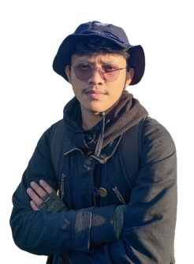

Welcome to My Portfolio.
Hello, my name is Putu Ardi Sudarmika
"I am an enthusiastic Computer Science student from Udayana University, driven by a passion for innovation. I thrive on weaving imaginative concepts into tangible projects. Let's embark on a journey to explore my creative endeavors together!"
The Technology I am Presently Researching
C language
Learning of the C programming language used during college lectures.
UI/UX Design
Learn while creating multiple projects..
HTML
Employed by HTML virtuosos to architect mesmerizing interactive engagements.
Bootstrap
Cutting-edge UI/UX framework for crafting a seamlessly mobile-responsive website.
Javascript
Harnessed by web artisans to craft captivating interactive experiences.
Python
Leveraged by Python developers to engineer enthralling interactive encounters.
About Me
Om Swastyastu, Assalamualaikum warahmatullahi wabarakatuh, Greetings of peace to all, and a respectful salute to our shared culture! My name is Putu Ardi Sudarmika, but you can call me by my nickname, Ardi. I possess a simple yet spirited nature, driven by a fervent desire to contribute to the world of Informatics. Currently, I am embarking on a journey as a student.
Throughout my educational journey, I've discovered a deep passion for the field of Informatics, particularly in the realm of Frontend development. I've delved into crucial aspects, including Web Programming, graphic design, and data analysis. With great enthusiasm, I've honed these skills and continue to strive for growth.
I firmly believe that diligent effort and dedication always yield the best results. My life motto is "Think the best, Do the best, get the best," which propels me to consistently give my utmost in everything I undertake. I am committed to achieving success with determination and hard work.
My ultimate goal is to be a person of value to those around me. I aspire to excel in the field of Informatics and make my parents proud of my accomplishments.
I find joy in merging creativity with technical solutions. It's exhilarating to devise innovative answers to challenges faced. My approach to work is rooted in innovation, and I take pleasure in designing and creating solutions that help solve problems.
I hold high hopes for contributing and sharing experiences with you. Through this platform, let's collectively explore the world of technology through my eyes and perspective. Thank you for taking the time to visit my page. I hope we can connect further and share ideas and knowledge in the future.
May we collaborate and inspire each other to greater heights!
Contact
If you're eager to collaborate or have any inquiries, feel free to reach out to me using the contact details provided below.